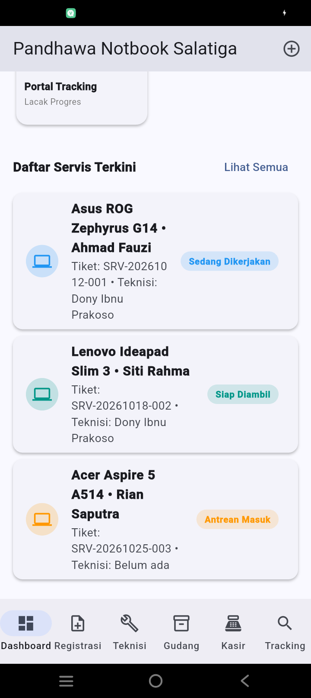
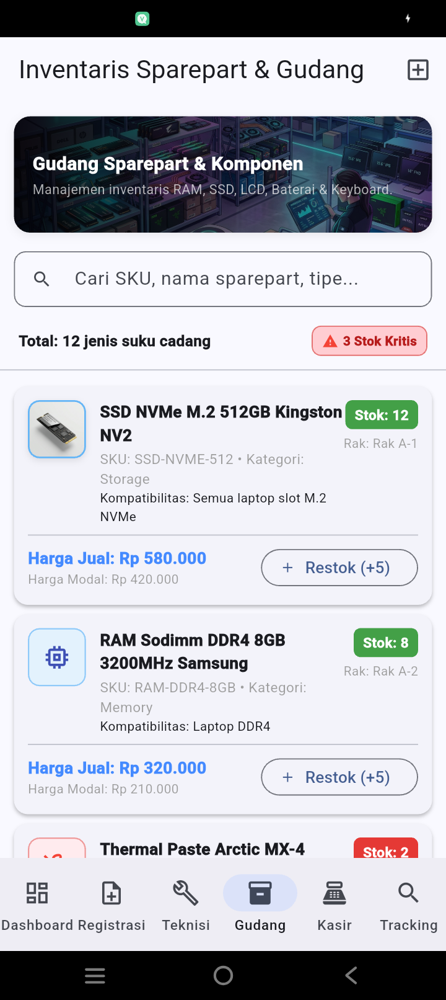
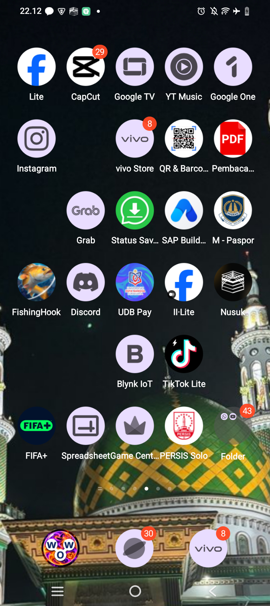
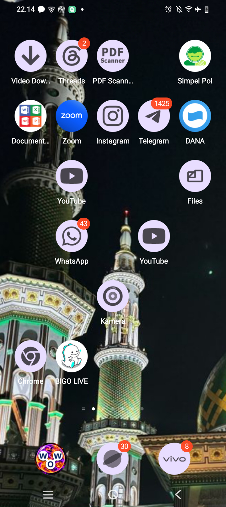

Kampus Fakultas Ilmu Komputer: Jl. Bhayangkara No. 55, Tipes, Surakarta | Telp. 0271-719552 | Web: www.udb.ac.id
Mata Kuliah: Mobile Testing (S1 Teknik Informatika - TI23B) • Dosen: Triyono M.Kom
| Nama Lengkap | Dony Ibnu Prakoso |
|---|---|
| NIM | 230103261 |
| Kelas / Sifat Ujian | TI23B / Projek |
| Judul Proyek | Pengujian Aplikasi Mobile dengan User Acceptance Testing dan Maestro |
| Nama Aplikasi | Pandhawa Notbook Salatiga v1.0.0 (Release Build) |
| Tautan Repositori GitHub | https://github.com/ARCANO39/dony-ibnu.git |
| Tautan Video Penjelasan | [Masukkan Tautan YouTube / Google Drive Anda di Sini] |
| Berkas APK Siap Pasang | pandhawa_notbook_salatiga.apk (Ukuran: 71.1 MB) |
Tujuan Aplikasi: Mendigitalkan seluruh alur kerja operasional bengkel servis komputer jinjing di Pandhawa Notbook Salatiga, meliputi penerimaan unit masuk (intake), diagnosa kerja teknisi hardware (Dony Ibnu Prakoso), alokasi stok suku cadang gudang, transaksi pembayaran nota di kasir POS, dan portal pelacakan mandiri transparan bagi pelanggan via WhatsApp.
Persona Pengguna (User Personas):
Pengujian penerimaan pengguna mencakup 6 skenario lengkap (alur utama, validasi input, kondisi gagal, dan fitur tambahan):
| ID | Skenario Pengujian | Persona | Hasil Aktual | Status |
|---|---|---|---|---|
| UAT-01 | Registrasi Unit Masuk & Terbit Label QR | Kasir (P-01) | Form tersimpan, Nomor Tiket SRV-20261106-004 & QR terbit. |
LULUS (100%) |
| UAT-02 | Meja Kerja Teknisi & Alokasi Sparepart | Teknisi (P-02) | Status naik ke "Siap Diambil", sparepart & biaya terakumulasi. | LULUS (100%) |
| UAT-03 | Kasir POS, Pelunasan & Perhitungan DP | Kasir (P-01) | Nota lunas, omzet kasir bertambah, unit berstatus delivered. | LULUS (100%) |
| UAT-04 | Validasi Formulir Registrasi Kosong | Kasir (P-01) | Sistem memblokir submit dan menampilkan teks merah "Wajib diisi". | LULUS (100%) |
| UAT-05 | Pelacakan Tiket Fiktif / Salah | Pelanggan (P-03) | Aplikasi aman, muncul pesan banner "Tiket tidak ditemukan". | LULUS (100%) |
| UAT-06 | Peringatan Stok Kritis Gudang Sparepart | Teknisi (P-02) | Komponen stok ≤ 3 ditandai badge oranye dan sinkron di Dashboard. | LULUS (100%) |
Pengujian regresi otomatis diimplementasikan menggunakan 4 file flow YAML di folder maestro/:
01_app_launch.yaml: Memverifikasi App Bar, branding logo baru, dan antrean teknisi Dony Ibnu Prakoso.02_navigation.yaml: Memverifikasi navigasi 5 modul (Registrasi, Teknisi, Gudang, Kasir, Tracking).03_crud_transaction.yaml: Mengisi formulir pelanggan Budi Santoso, Asus ROG Zephyrus G14, verifikasi dialog tiket QR, dan masuk antrean teknisi.04_validation_error.yaml: Menguji validasi form kosong ("Wajib diisi") dan pencarian nomor tiket tidak valid.



Repositori dikembangkan mengikuti kaidah GitFlow dengan 25 commit bermakna sejak inisialisasi awal hingga perilisan versi 1.0.0:
* 7274c75 docs(evidence): tambahkan seluruh tangkapan layar bukti eksekusi pengujian Flow 02, Flow 03, dan Flow 04
* b87be4a feat(testing): update flow skenario maestro 01-04 dan tambahkan bukti screenshot pengujian
* 3fd79b5 feat(inventory): add custom 3D SSD and Keyboard icons, expand spareparts catalog, set technician to Dony Ibnu Prakoso
* 30dbd82 feat(branding): update official brand logo monogram and launcher icons across Android and Web
* fa200a2 test(mobile): implement Maestro automation flows and comprehensive UAT test report for UTS
* 581e9a5 docs: finalize project documentation and ignore rules
* 996d756 merge: integrate feature/branding-pandhawa-salatiga into develop
* 013ecb9 feat(branding): apply Pandhawa Notbook Salatiga visual identity, custom neon launcher icons, and feature banners
* 7c6b6fe merge: integrate feature/dashboard-navigation into develop
* 5f067b4 feat(dashboard): integrate responsive navigation shell and management overview dashboard
* 15302c6 merge: integrate feature/customer-tracking into develop
* 7208296 feat(tracking): implement public customer status tracking portal with WhatsApp verification
* d11a645 merge: integrate feature/pos-billing into develop
* 0a705f1 feat(pos): implement cashier point-of-sale billing, receipt printing, and transaction logs
* e308bbf merge: integrate feature/inventory-management into develop
* f609836 feat(inventory): implement spare parts catalog, stock level monitoring, and price management
* 86adb0e merge: integrate feature/technician-workbench into develop
* def89ad feat(technician): implement technician repair workbench, diagnostic pipelines, and parts allocation
* 3b45f22 merge: integrate feature/ticket-registration into develop
* 4f40268 feat(registration): implement customer intake, hardware diagnostic checklist, and QR label generation
* b28813d merge: integrate feature/domain-models-state into develop
* 17677c8 feat(state): implement domain entities (ServiceTicket, Sparepart, Transaction) and reactive AppState
* 94f9e1f merge: integrate feature/project-scaffolding into develop
* 9d3ef29 feat(core): initialize Flutter project structure, Android Gradle configuration, and dependencies
* 20be919 chore: initial repository setup with project documentation and UAT specifications
Aplikasi mobile Pandhawa Notbook Salatiga telah berhasil dirancang, diuji secara manual (UAT dengan tingkat kelulusan 100%), dan diuji secara otomatis menggunakan framework Maestro sesuai seluruh butir instruksi soal Ujian Tengah Semester (UTS) Ganjil Tahun Akademik 2026/2027.